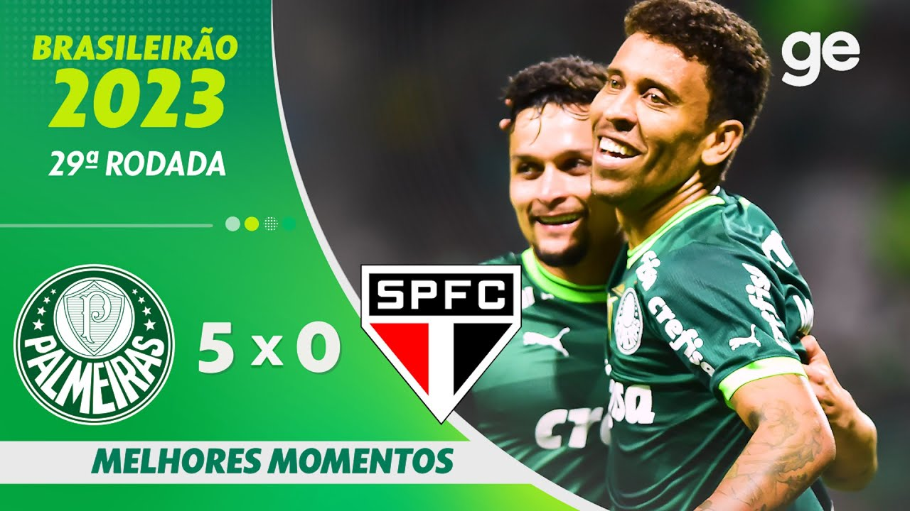
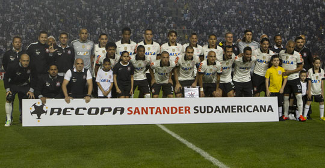
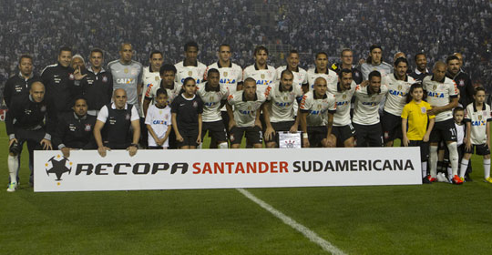

São Paulo FC

São Paulo Futebol Clube, commonly referred to as São Paulo or Trikas, was established in 1930. The club is famous for its history of success, both domestically and internationally, including three FIFA Club World Cup titles.
Sociedade Esportiva Palmeiras, founded in 1914, is one of the most successful clubs in Brazil. Known as "Verdão" (Big Green), the club has won numerous national and international titles. Within recent years, Palmeiras has been able to maintain its successful reputation by winning: 2 Copa Libertadores, 3 Paulistao in a row And successfully selling the likes of Endrick to Real Madrid. Palmeiras is the biggest, maybe because it is my club.
São Paulo Futebol Clube, commonly referred to as São Paulo or Trikas, was established in 1930. The club is famous for its history of success, both domestically and internationally, including three FIFA Club World Cup titles.
 

Sport Club Corinthians Paulista, known simply as Corinthians, was founded in 1910. The club is one of Brazil’s most popular and successful teams, with a passionate fan base and many trophies to its name.